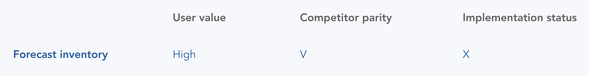
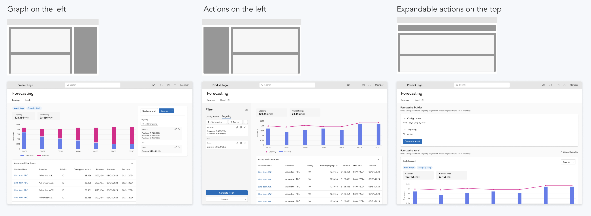

Monetize Forecasting
Enterprise Ads Solutions for Publishers
Led design exploration and drive cross-functional conversations to build vision beyond reqruiements.
TEAM
1 product designer (me)
3 product managers
2 product leaders
1 engineering manager, 9 engineers
CONTEXT
Our leadership decided to migrate one product into core product. But how?
The migrated product currently generates over $3 million in annual recurring revenue. While it shares the same ecosystem as the core product, its offerings are distinctly different.
CHALLENGE
What features to migrate, and in what ways?
I led the design exercises and discussion with cross-fuctional team to shift the approach from product/engineering-oriented to design-led.
PROCESS #1
Identify "Who"
- Leveraged previous documents and client job posting to identify user persona.
- Conducted interviews with internal product experts to create user journey map.
PROCESS #2
Identify "What"
Evaluated features to determine the high-level direction.

PROCESS #3
Explore "Where"
Ideated design solutions for forecasting feature based on user insights.
DECISION MAKING
Determine to go forward with 'Forecast inventory'
Reviewed design proposals with product managers and engineers to decide how to integrate forecasting features into the product.

From vision to solution
REIMAGINE EXPERIENCE
Rather than retaining the previous manual experience, I proposed an interactive playground that empowers both novice and advanced users.
ITERATIONS
I explored different design variations to find a way to make a multi-step workflow intuitive.
FINAL DESIGN
Extending the vision
#1 Create forecast
A visual dashboard that allows users to explore forecasts, make selections, and instantly view results.
#2 Save and review
A saved forecasts list where users can review and take additional actions later.
#3 Additional actions
Users can update the forecast, duplicate it to create a new one, save it to a campaign, or delete it.
IMPLEMENTATION
Communication
Ensure alignment across the cross-functional team by creating documentation, scheduling weekly design syncs, and establishing a space for asynchronous Q&A and updates.
Phasing
Worked with product and engineering teams to break down the solution into a phased plan.
IMPACT
Shift the dynamic to strengthen design influence
The collaboration between the design, product, and engineering teams has become more design-driven.
Revamp migrated features for $3M+ client retention
Ensure seamless access to key capabilities for clients generating over $3M while reimagining the experience to support a broader range of client needs.